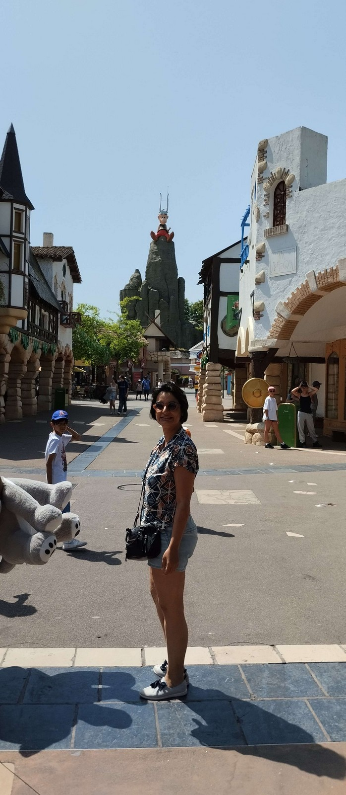

Arsène Lupin était peut être un cambrioleur mais c'était avant tout un gentleman. 22 a toujours été mon nombre préféré,
car 22 est composé de deux "2" ; et "2" est le premier nombre premier, et puis "2" symbolise de couple, la paire ; je n'ai jamais
trop aimé les nombres impairs :). C'est étonnant à quel point on le retrouve dans nos dates d'anniversaire. Voici donc la suite de la lettre...
enfin sous forme de puzzle. Il y a 8 pièces sur 2 lignes et 4 colonnes. Prend ton temps, et petit indice la première pièce en haut à gauche commence par des "..."
Je pense que pour le coup cette partie du jeu est digne d'un manège du parc Asterix !

Accéder à la suite de la lettre ne va pas être aussi facile que la dernière fois, et je sais que là tu vas me détester, mais tout bon enseignant vérifie que ses élèves ont acquis les connaissances par une évaluation.
Voici donc une liste de nombres. A toi de calculer leur moyenne et leur variance. Le double de la somme des deux est la clef pour la suite de la lettre.